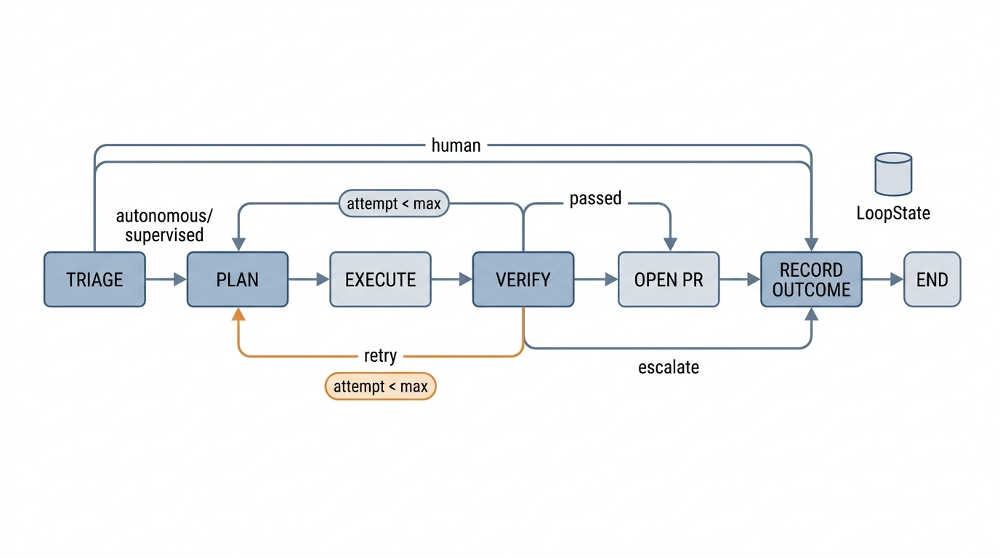

Prerequisites
This section brings together everything from the chapter. You need the SWE agent
architecture and capability envelopes from Section 24.1,
and the five-stage pipeline, reward signals, and triage learner from
Section 24.2. The recipe uses LangGraph, a Python library for building stateful multi-step agent workflows as directed graphs, for workflow
orchestration (introduced in Chapter 17),
the Claude Code software development kit (SDK) for agent execution, and the GitHub application programming interface (API) for repository integration.
Familiarity with async Python (asyncio) and basic git operations is assumed.
This section is a recipe. You will build a complete supervised autonomous loop that runs as a persistent service, polls a GitHub repository for new issues, classifies each issue by risk, dispatches SWE agents to resolve low-risk issues, verifies the results through a multi-signal pipeline, opens pull requests with full provenance, and feeds outcomes back to improve triage over time. The system operates at L3 (supervised), where the agent acts but a human approves before changes take effect, by default, with a mechanism to graduate individual task categories to L4 (autonomous), where the agent may act and merge without waiting for human approval. As evidence accumulates, the system widens the boundary between these two levels. By the end, you will have a working system that you can point at a real repository and watch it resolve issues.
1. System Architecture
Imagine pointing a service at your GitHub repository on Friday evening and returning Monday to find three issues resolved, two pull requests merged, and a classifier that learned which categories of work it can handle without asking. That service is the supervised autonomous loop. Building one requires six components, each implemented as a node in a LangGraph state machine: (1) a GitHub poller that detects new issues, (2) a triage classifier that routes issues by risk, (3) a planning agent (a separate LLM call that decomposes the issue into concrete steps before any code is written) that decomposes tasks, (4) an execution engine that dispatches SWE agents, (5) a verification pipeline that validates changes, and (6) a feedback recorder that stores outcomes and updates the triage model. Figure 24.3 shows how these components connect through conditional edges that implement retry and escalation logic. These components connect through a typed state object that accumulates information as the task progresses through the pipeline.
Without a supervised loop, repositories accumulate a backlog of small, well-understood tasks that no one prioritizes: documentation fixes sit for weeks, dependency bumps expire into security vulnerabilities, and type hint gaps silently erode tooling quality. The cost of inaction on each individual issue is low, but the compounding cost across hundreds of issues is substantial.
A supervised autonomous loop is a long-running service that detects work items (such as GitHub issues), resolves them using AI agents, and routes results through verification and optional human review before merging. It converts idle repository time into continuous forward progress on low-risk tasks. Human engineers focus on design decisions and complex debugging instead. The mechanism is a state machine: each work item flows through a fixed sequence of nodes (triage, plan, execute, verify, report). Conditional edges retry on failure or escalate to a human when confidence is low. Use a supervised loop when your repository has a steady stream of well-defined, low-risk issues (documentation fixes, dependency bumps, type hint additions). For tasks requiring cross-system architectural judgment or security-sensitive changes, direct human ownership remains the better choice.
With the loop's purpose and boundaries defined, the next design question is which coordination pattern best enforces those boundaries at runtime.
The architecture follows the orchestrator pattern from Chapter 17: a central state machine coordinates specialized agents rather than letting agents communicate directly. This design makes the system easier to monitor, debug, and modify. Each node's behavior is determined entirely by the state it receives, and each node's output is a state update, making the pipeline deterministic (given the same LLM outputs) and replayable. In short: the state object is the system's memory, so every node can be stateless, restartable, and auditable.
from dataclasses import dataclass, field
from typing import Optional, Literal
import datetime
@dataclass
class LoopState:
"""
Typed state object for the supervised autonomous loop.
Flows through every node in the LangGraph pipeline.
Each node reads what it needs and writes its results
back into the state.
"""
# Issue metadata (set by poller)
issue_id: str = ""
issue_title: str = ""
issue_body: str = ""
issue_labels: list[str] = field(default_factory=list)
issue_author: str = ""
# Triage results (set by triage node)
triage_route: str = "" # "autonomous", "supervised", "human"
triage_confidence: float = 0.0
risk_category: str = ""
triage_reasoning: str = ""
# Plan (set by planning node)
plan_summary: str = ""
plan_steps: list[dict] = field(default_factory=list)
compute_budget_usd: float = 2.0
# Execution results (set by execution node)
branch_name: str = ""
files_changed: list[str] = field(default_factory=list)
lines_added: int = 0
lines_removed: int = 0
execution_cost_usd: float = 0.0
execution_time_seconds: float = 0.0
agent_output: str = ""
# Verification results (set by verify node)
tests_passed: int = 0
tests_failed: int = 0
lint_score: float = 0.0
type_check_ok: bool = False
security_ok: bool = False
verification_passed: bool = False
verification_confidence: float = 0.0
blocking_issues: list[str] = field(default_factory=list)
# Loop control
attempt: int = 1
max_attempts: int = 3
final_action: str = "" # "merge", "review", "escalate", "retry"
pr_url: str = ""
timestamp: str = field(
default_factory=lambda: datetime.datetime.now().isoformat()
)
LoopState dataclass: the typed state object that flows through every node in the autonomous loop. Each node reads and writes specific fields, creating a clear data flow that is easy to inspect and debug. The final_action field determines the terminal transition: merge, request review, escalate to human, or retry.2. Implementing the LangGraph Pipeline
LangGraph models the pipeline as a directed graph where nodes are Python functions that transform the state and edges are conditional transitions that route the state to the next node. The graph defines six nodes corresponding to the six components, plus conditional edges that implement the retry and escalation logic from Section 24.2. Figure 24.3.1 illustrates LangGraph supervised autonomous loop state machine.

from langgraph.graph import StateGraph, END
from langgraph.graph.state import CompiledStateGraph
def build_autonomous_loop() -> CompiledStateGraph:
"""
Build the LangGraph pipeline for the supervised autonomous loop.
The graph has six nodes connected by conditional edges:
sense -> triage -> plan -> execute -> verify -> route
where route branches to merge, review, escalate, or retry.
"""
graph = StateGraph(LoopState)
# Add nodes
graph.add_node("triage", triage_node)
graph.add_node("plan", plan_node)
graph.add_node("execute", execute_node)
graph.add_node("verify", verify_node)
graph.add_node("open_pr", open_pr_node)
graph.add_node("record_outcome", record_outcome_node)
# Entry point: triage is the first node
graph.set_entry_point("triage")
# Triage routes to plan (agent handles) or END (human handles)
graph.add_conditional_edges(
"triage",
route_after_triage,
{
"plan": "plan",
"escalate": "record_outcome",
},
)
# Plan always goes to execute
graph.add_edge("plan", "execute")
# Execute always goes to verify
graph.add_edge("execute", "verify")
# Verify routes to open_pr, retry, or escalate
graph.add_conditional_edges(
"verify",
route_after_verify,
{
"open_pr": "open_pr",
"retry": "plan",
"escalate": "record_outcome",
},
)
# Open PR goes to record outcome
graph.add_edge("open_pr", "record_outcome")
# Record outcome is terminal
graph.add_edge("record_outcome", END)
return graph.compile()
def route_after_triage(state: LoopState) -> str:
"""Conditional edge: route based on triage decision."""
if state.triage_route == "human":
return "escalate"
return "plan"
def route_after_verify(state: LoopState) -> str:
"""Conditional edge: route based on verification results."""
if state.verification_passed:
return "open_pr"
if state.attempt < state.max_attempts:
return "retry"
return "escalate"
StateGraph with six nodes and conditional edges. The route_after_triage function directs human-only tasks to escalation. The route_after_verify function implements bounded retry: if verification fails and attempts remain, loop back to planning; otherwise escalate to a human.Mental Model
Think of the LangGraph pipeline as an airport baggage system. Each suitcase (issue) enters on the conveyor belt (poller), passes through an X-ray scanner (triage) that flags suspicious items for manual inspection and lets routine bags continue, then routes to a sorting machine (planner) that assigns it a destination gate (plan steps). A loader (execution engine) places it on the correct cart, and a final weight check (verification) confirms nothing went wrong. If the weight is off, the bag loops back to re-sorting for another attempt; after three failures, a human baggage handler collects it. The key insight the analogy preserves: the bag itself carries a tag (the typed state object) that every station reads and updates, so no station needs to remember what happened at previous stations.
3. Implementing Each Node
Each node is a Python function that takes the current state, performs its work, and returns a state update (a dictionary of fields to modify). The implementations below follow pipeline order.
3.1 Triage Node
The triage node uses the two-layer classifier from Section 24.2 (rule-based critical pattern matching plus label-based heuristics) and adds a large language model (LLM)-based classification layer for tasks that do not match any rule.
import subprocess
import json
def triage_node(state: LoopState) -> dict:
"""
Classify the issue by risk and decide routing.
Layer 1: Rule-based pattern matching for critical keywords.
Layer 2: Label-based heuristics for known categories.
Layer 3: LLM-based classification for ambiguous cases.
"""
title = state.issue_title.lower()
body = state.issue_body.lower()
labels = [l.lower() for l in state.issue_labels]
combined = f"{title} {body}"
# Layer 1: critical patterns always go to human
critical_patterns = [
"security", "vulnerability", "CVE", "auth",
"payment", "billing", "migration", "breaking",
"password", "encryption", "deploy", "infra",
]
for pattern in critical_patterns:
if pattern in combined:
return {
"triage_route": "human",
"triage_confidence": 0.95,
"risk_category": "critical",
"triage_reasoning": (
f"Critical pattern '{pattern}' detected."
),
}
# Layer 1.5: check if the triage learner has graduated this
# category to autonomous (feedback from record_outcome_node)
for label in labels:
if _triage_learner.should_allow_autonomous(label):
return {
"triage_route": "autonomous",
"triage_confidence": 0.90,
"risk_category": "graduated",
"triage_reasoning": (
f"Category '{label}' graduated to autonomous "
f"based on accumulated success evidence."
),
}
# Layer 2: low-risk labels
low_risk = {"documentation", "typo", "chore", "dependencies",
"good first issue", "help wanted"}
if any(l in low_risk for l in labels):
return {
"triage_route": "autonomous",
"triage_confidence": 0.85,
"risk_category": "low",
"triage_reasoning": "Low-risk label detected.",
}
# Layer 3: LLM classification for ambiguous cases
classification = _llm_classify_issue(
state.issue_title, state.issue_body
)
return {
"triage_route": classification["route"],
"triage_confidence": classification["confidence"],
"risk_category": classification["risk"],
"triage_reasoning": classification["reasoning"],
}
def _llm_classify_issue(title: str, body: str) -> dict:
"""
Use an LLM to classify issue risk when rules are ambiguous.
Returns a structured classification with route, confidence,
risk level, and reasoning.
"""
prompt = f"""Classify this GitHub issue for autonomous handling.
TITLE: {title}
BODY: {body}
Respond with JSON:
{{
"route": "autonomous" | "supervised" | "human",
"confidence": 0.0-1.0,
"risk": "low" | "medium" | "high" | "critical",
"reasoning": "one sentence explanation"
}}
CLASSIFICATION RULES:
- "autonomous": simple bugs, documentation, type hints, test additions
- "supervised": feature additions, refactoring, moderate complexity
- "human": security, data handling, breaking changes, architecture"""
result = subprocess.run(
["claude", "--print", "--model", "claude-haiku-4-20250414",
"--output-format", "json", "--max-turns", "1"],
input=prompt,
capture_output=True, text=True,
timeout=30,
)
try:
output = json.loads(result.stdout)
# Extract the classification from the agent's response
text = output.get("result", "{}")
# Parse the JSON from the model's response
import re
json_match = re.search(r'\{[^}]+\}', text)
if json_match:
return json.loads(json_match.group())
except (json.JSONDecodeError, KeyError):
pass
# Default to supervised if LLM classification fails
return {
"route": "supervised",
"confidence": 0.5,
"risk": "medium",
"reasoning": "LLM classification unavailable; defaulting to supervised.",
}
Exercise 24.3.1
The triage node's Layer 1 checks for the keyword "auth" in the combined
title and body text. A user files an issue titled "Add author field to book metadata."
What route does the triage node assign, and is that routing correct? If not, propose
a concrete fix to the critical-pattern matching logic that avoids this false positive
while still catching genuine authentication issues.
Hint
The substring "auth" appears inside the word "author." Consider using
word-boundary matching (for example, re.search(r'\bauth\b', combined))
or replacing the short pattern with more specific terms like "authentication,"
"authorization," and "oauth."
Common Misconception
Readers often assume that a task routed as "autonomous" bypasses human oversight entirely, but that is not the case. Even autonomous-route tasks still pass through the full verification pipeline (tests, linting, diff size checks), and auto-merge only triggers when verification confidence exceeds 0.85; below that threshold the PR is labeled for human review just like any supervised task. "Autonomous" in this architecture means "the system may merge without waiting for a human approval step," not "no human can see or intervene."
Step-Through: Triage Classification of a Sample Issue
Trace through the triage node with a concrete issue: title = "Update README installation instructions," body = "The pip install command is outdated," labels = ["documentation", "good first issue"].
Layer 1 (critical patterns): combined text = "update readme installation instructions the pip install command is outdated." Check each critical keyword: "security" not found, "vulnerability" not found, "CVE" not found, "auth" not found, "payment" not found, "billing" not found, "migration" not found, "breaking" not found, "password" not found, "encryption" not found, "deploy" not found, "infra" not found. No match; proceed to Layer 2.
Layer 2 (label heuristics): labels = ["documentation", "good first issue"].
The set low_risk = {"documentation", "typo", "chore", "dependencies", "good first issue", "help wanted"}.
Check: "documentation" is in low_risk. Match found. Return immediately:
triage_route = "autonomous", triage_confidence = 0.85,
risk_category = "low". Layer 3 (LLM) is never called, saving one API round-trip and roughly \$0.001.
3.2 Plan Node
import subprocess
import json
def plan_node(state: LoopState) -> dict:
"""
Decompose the issue into a step-by-step plan.
Uses a planning agent (Claude Sonnet) that reads the issue
and produces a structured plan with target files, verification
criteria, and a compute budget.
"""
prompt = f"""You are a software planning agent. Create a plan to resolve
this GitHub issue.
ISSUE #{state.issue_id}: {state.issue_title}
{state.issue_body}
ATTEMPT: {state.attempt} of {state.max_attempts}
{"PREVIOUS ATTEMPT FAILED. Adjust your approach." if state.attempt > 1 else ""}
{f"Previous blocking issues: {state.blocking_issues}" if state.blocking_issues else ""}
Produce a JSON plan:
{{
"summary": "one-sentence approach",
"steps": [
{{
"description": "what to do",
"target_files": ["path/to/file.py"],
"verification": "how to check"
}}
],
"test_strategy": "command to run tests"
}}
Keep the plan minimal. Prefer focused changes over broad refactoring."""
result = subprocess.run(
["claude", "--print", "--model", "claude-sonnet-4-20250514",
"--output-format", "json", "--max-turns", "3"],
input=prompt,
capture_output=True, text=True,
timeout=60,
)
try:
output = json.loads(result.stdout)
text = output.get("result", "{}")
import re
json_match = re.search(r'\{.*\}', text, re.DOTALL)
if json_match:
plan = json.loads(json_match.group())
return {
"plan_summary": plan.get("summary", ""),
"plan_steps": plan.get("steps", []),
"attempt": state.attempt + (1 if state.attempt > 1 else 0),
}
except (json.JSONDecodeError, KeyError):
pass
return {
"plan_summary": "Direct fix attempt",
"plan_steps": [{"description": "Read code and fix the issue",
"target_files": [], "verification": "run tests"}],
}
3.3 Execute Node
The execution node is the core of the system: it spawns a software engineering (SWE) agent (via the Claude Code SDK) in an isolated branch, passes it the plan, and captures the results. The agent operates in a fresh git branch created from the repository's default branch, ensuring complete isolation from other in-progress work.
import subprocess
import json
import time
from pathlib import Path
def execute_node(state: LoopState) -> dict:
"""
Dispatch an SWE agent to implement the plan.
Creates an isolated branch, runs Claude Code with the
plan as context, and captures execution metrics.
"""
repo_path = Path.cwd() # assumes running in the repo root
branch_name = f"auto/issue-{state.issue_id}-attempt-{state.attempt}"
# Create a fresh branch from the default branch
subprocess.run(
["git", "checkout", "-b", branch_name, "origin/main"],
cwd=str(repo_path),
capture_output=True,
)
# Build the execution prompt with plan context
steps_text = "\n".join(
f" {i+1}. {s['description']} (files: {s.get('target_files', [])})"
for i, s in enumerate(state.plan_steps)
)
execution_prompt = f"""You are an SWE agent resolving GitHub issue #{state.issue_id}.
ISSUE: {state.issue_title}
{state.issue_body}
PLAN:
{state.plan_summary}
STEPS:
{steps_text}
INSTRUCTIONS:
1. Follow the plan steps in order.
2. After implementing changes, run the test suite.
3. If tests fail, fix the issues before finishing.
4. Keep total changes under 500 lines.
5. Do not modify CI, deployment, or configuration files.
When finished, summarize all changes made."""
# Execute via Claude Code SDK
start_time = time.time()
result = subprocess.run(
[
"claude", "--print",
"--model", "claude-sonnet-4-20250514",
"--max-turns", "25",
"--output-format", "json",
"--allowedTools", "Read,Edit,Write,Bash,Glob,Grep",
],
input=execution_prompt,
capture_output=True,
text=True,
cwd=str(repo_path),
timeout=600, # 10-minute timeout
)
elapsed = time.time() - start_time
# Collect diff statistics
diff_result = subprocess.run(
["git", "diff", "--numstat", "origin/main"],
capture_output=True, text=True,
cwd=str(repo_path),
)
files_changed = []
total_added = total_removed = 0
for line in diff_result.stdout.strip().split("\n"):
if not line:
continue
parts = line.split("\t")
if len(parts) == 3:
try:
total_added += int(parts[0])
total_removed += int(parts[1])
except ValueError:
pass
files_changed.append(parts[2])
# Parse agent output
agent_output = ""
try:
output = json.loads(result.stdout)
agent_output = str(output.get("result", ""))
except json.JSONDecodeError:
agent_output = result.stdout[:2000]
return {
"branch_name": branch_name,
"files_changed": files_changed,
"lines_added": total_added,
"lines_removed": total_removed,
"execution_time_seconds": elapsed,
"agent_output": agent_output,
}
claude --print in an isolated git branch. The agent receives the plan steps as structured context, operates under tool restrictions (no network, no configuration edits), and is capped at 25 turns and 10 minutes. Diff statistics are collected after execution for the verification pipeline.3.4 Verify Node
import subprocess
import re
from pathlib import Path
def verify_node(state: LoopState) -> dict:
"""
Run multi-signal verification on the agent's changes.
Checks: test suite, linter, type checker, diff size limits.
Produces a pass/fail decision with confidence score.
"""
repo_path = Path.cwd()
blocking = []
# 1. Run tests
test_result = subprocess.run(
["python", "-m", "pytest", "--tb=short", "-q"],
capture_output=True, text=True,
cwd=str(repo_path),
timeout=300,
)
passed = failed = 0
for line in test_result.stdout.split("\n"):
m = re.search(r"(\d+) passed", line)
if m:
passed = int(m.group(1))
m = re.search(r"(\d+) failed", line)
if m:
failed = int(m.group(1))
if failed > 0:
blocking.append(f"{failed} test(s) failed")
# 2. Run linter
lint_result = subprocess.run(
["ruff", "check", "--quiet", "."],
capture_output=True, text=True,
cwd=str(repo_path),
)
lint_issues = len([
l for l in lint_result.stdout.strip().split("\n") if l.strip()
]) if lint_result.stdout.strip() else 0
lint_score = max(0.0, 1.0 - lint_issues * 0.05)
# 3. Check diff size limits
max_files = 10
max_lines = 500
total_lines = state.lines_added + state.lines_removed
if len(state.files_changed) > max_files:
blocking.append(
f"Too many files changed: {len(state.files_changed)} > {max_files}"
)
if total_lines > max_lines:
blocking.append(
f"Too many lines changed: {total_lines} > {max_lines}"
)
# 4. Compute confidence
# Weights: tests matter most (0.5), lint next (0.3), a base
# floor of 0.2 ensures verified-but-untested changes still get
# a nonzero score, and a small size bonus rewards minimal diffs.
total_tests = passed + failed
test_score = passed / total_tests if total_tests > 0 else 0.0
size_bonus = max(0.0, 0.1 * (1.0 - total_lines / max_lines))
confidence = 0.5 * test_score + 0.3 * lint_score + 0.2 + size_bonus
confidence = min(1.0, confidence)
return {
"tests_passed": passed,
"tests_failed": failed,
"lint_score": lint_score,
"verification_passed": len(blocking) == 0,
"verification_confidence": confidence,
"blocking_issues": blocking,
}
3.5 Open PR Node
import subprocess
import json
def open_pr_node(state: LoopState) -> dict:
"""
Open a pull request with the agent's changes.
The PR body includes full provenance: the original issue,
triage decision, plan summary, execution metrics, and
verification results. This audit trail is essential for
building trust in autonomous operation.
"""
# Push the branch
subprocess.run(
["git", "push", "origin", state.branch_name],
capture_output=True, text=True,
)
# Determine PR labels based on triage route
labels = ["autonomous-agent"]
if state.triage_route == "autonomous":
labels.append("auto-merge-candidate")
elif state.triage_route == "supervised":
labels.append("needs-human-review")
# Build the PR body with full provenance
pr_body = f"""## Autonomous Resolution of #{state.issue_id}
**Issue:** {state.issue_title}
### Triage
- **Route:** {state.triage_route} (confidence: {state.triage_confidence:.2f})
- **Risk:** {state.risk_category}
- **Reasoning:** {state.triage_reasoning}
### Plan
{state.plan_summary}
### Execution
- **Attempt:** {state.attempt} of {state.max_attempts}
- **Files changed:** {len(state.files_changed)}
- **Lines:** +{state.lines_added} / -{state.lines_removed}
- **Time:** {state.execution_time_seconds:.0f}s
- **Cost:** ${state.execution_cost_usd:.2f}
### Verification
- **Tests:** {state.tests_passed} passed, {state.tests_failed} failed
- **Lint score:** {state.lint_score:.2f}
- **Confidence:** {state.verification_confidence:.2f}
### Files Changed
{chr(10).join(f"- `{f}`" for f in state.files_changed)}
---
*This PR was created by the supervised autonomous loop.
[Issue #{state.issue_id}] | Triage: {state.triage_route} | Confidence: {state.verification_confidence:.2f}*
"""
# Create the PR using gh CLI
pr_result = subprocess.run(
[
"gh", "pr", "create",
"--title", f"[Auto] Fix #{state.issue_id}: {state.issue_title}",
"--body", pr_body,
"--label", ",".join(labels),
"--head", state.branch_name,
],
capture_output=True, text=True,
)
pr_url = pr_result.stdout.strip()
# If autonomous route with high confidence, request auto-merge
if (state.triage_route == "autonomous"
and state.verification_confidence >= 0.85):
subprocess.run(
["gh", "pr", "merge", pr_url, "--auto", "--squash"],
capture_output=True, text=True,
)
return {
"final_action": "merge",
"pr_url": pr_url,
}
return {
"final_action": "review",
"pr_url": pr_url,
}
gh CLI. The body includes triage decision, plan, execution metrics, and verification results. For autonomous-route tasks with verification confidence at or above 0.85, the node enables GitHub's auto-merge feature; otherwise it labels the PR for human review.3.6 Record Outcome Node
Once a pull request is opened (or an issue is escalated), the final node closes the feedback loop by recording what happened so the triage classifier can improve over time.
import json
import datetime
from pathlib import Path
# Module-level learner instance (persists across loop iterations)
_triage_learner = TriageLearner()
def record_outcome_node(state: LoopState) -> dict:
"""
Record the outcome for the feedback loop.
Stores the full pipeline trace in a JSON Lines (JSONL) log and
updates the triage learner with the result.
"""
outcome = {
"issue_id": state.issue_id,
"timestamp": datetime.datetime.now().isoformat(),
"triage_route": state.triage_route,
"risk_category": state.risk_category,
"final_action": state.final_action,
"attempts": state.attempt,
"files_changed": len(state.files_changed),
"lines_changed": state.lines_added + state.lines_removed,
"tests_passed": state.tests_passed,
"tests_failed": state.tests_failed,
"verification_passed": state.verification_passed,
"verification_confidence": state.verification_confidence,
"execution_time_seconds": state.execution_time_seconds,
"execution_cost_usd": state.execution_cost_usd,
"pr_url": state.pr_url,
}
# Append to JSONL log
log_path = Path(".autonomous-loop/outcomes.jsonl")
log_path.parent.mkdir(exist_ok=True)
with open(log_path, "a") as f:
f.write(json.dumps(outcome) + "\n")
# Update the triage learner
success = state.verification_passed and state.final_action in (
"merge", "review"
)
_triage_learner.update(
category=state.risk_category,
route=state.triage_route,
success=success,
)
# Check if any categories can graduate to autonomous
if _triage_learner.should_allow_autonomous(state.risk_category):
outcome["graduation_note"] = (
f"Category '{state.risk_category}' now eligible "
f"for autonomous routing."
)
return {"final_action": state.final_action}
TriageLearner, the Beta-distribution classifier from Section 24.2 that tracks per-category success rates. When a task category accumulates enough successful outcomes, the learner signals that the category can graduate to autonomous routing.The pull request (PR) body generated by the autonomous loop is not just documentation; it is the product. In a supervised system, the human reviewer's job is to decide whether to merge. The quality of that decision depends entirely on the information available. A PR that says "fixed the bug" gives the reviewer nothing to work with. A PR that shows the triage reasoning, the plan, the execution metrics, and the verification results lets the reviewer make an informed decision in seconds rather than minutes. The same principle applies to the experiment provenance records from Chapter 47: every autonomous action must carry its own audit trail.
4. Running the Loop
With all nodes implemented, the main loop is straightforward: poll for new issues, create a state object for each, and run it through the LangGraph pipeline.
import asyncio
import aiohttp
from typing import AsyncIterator
async def poll_github_issues(
owner: str, repo: str, token: str, interval: int = 60
) -> AsyncIterator[dict]:
"""Yield new GitHub issues as they appear."""
seen: set[int] = set()
url = f"https://api.github.com/repos/{owner}/{repo}/issues"
headers = {
"Authorization": f"Bearer {token}",
"Accept": "application/vnd.github+json",
}
async with aiohttp.ClientSession() as session:
while True:
async with session.get(
url, headers=headers,
params={"state": "open", "sort": "created", "direction": "desc"},
) as resp:
if resp.status == 200:
issues = await resp.json()
for issue in issues:
if (issue["number"] not in seen
and "pull_request" not in issue):
seen.add(issue["number"])
yield issue
await asyncio.sleep(interval)
async def run_autonomous_loop(
owner: str,
repo: str,
token: str,
poll_interval: int = 60,
) -> None:
"""
Main entry point for the supervised autonomous loop.
Polls GitHub for new issues and processes each through
the LangGraph pipeline. Runs indefinitely until stopped.
"""
pipeline = build_autonomous_loop()
print(f"Autonomous loop started for {owner}/{repo}")
print(f"Polling every {poll_interval}s...")
async for issue in poll_github_issues(owner, repo, token, poll_interval):
print(f"\nNew issue #{issue['number']}: {issue['title']}")
# Build initial state from the issue
initial_state = LoopState(
issue_id=str(issue["number"]),
issue_title=issue["title"],
issue_body=issue.get("body", ""),
issue_labels=[l["name"] for l in issue.get("labels", [])],
issue_author=issue["user"]["login"],
)
# Run through the pipeline
try:
final_state = pipeline.invoke(initial_state)
print(f" Result: {final_state['final_action']}")
if final_state.get("pr_url"):
print(f" PR: {final_state['pr_url']}")
except Exception as e:
print(f" Pipeline error: {e}")
# Log the error and continue to next issue
continue
# Entry point
if __name__ == "__main__":
import os
asyncio.run(run_autonomous_loop(
owner="your-org",
repo="your-repo",
token=os.environ["GITHUB_TOKEN"],
poll_interval=60,
))
LoopState construction, and pipeline invocation. It polls GitHub for new issues, constructs a state object for each, and runs it through the compiled LangGraph pipeline. Errors are caught per-issue so a single failure does not stop the loop. In production, this would run as a long-lived process supervised by systemd, Docker, or a cloud scheduler.
The from-scratch loop above handles polling, state management, and error recovery
manually. LangGraph Cloud
provides managed execution with built-in persistence, resumability, and a web dashboard
for monitoring pipeline runs. The same graph definition works unchanged; you deploy
it with langgraph deploy and trigger runs via a REST API or webhook:
# Deploy the same graph to LangGraph Cloud (3 lines)
from langgraph_sdk import get_client
client = get_client(url="https://your-langgraph-cloud.com")
run = await client.runs.create(
assistant_id="autonomous-loop",
input={"issue_id": "42", "issue_title": "Fix pagination bug", ...},
)
print(f"Run ID: {run['run_id']}, Status: {run['status']}")
langgraph_sdk client, replacing the manual polling loop with a managed REST-triggered run.LangGraph Cloud replaces the manual polling loop, the JSONL log file, and the in-memory triage learner with managed infrastructure: a persistent state store (PostgreSQL), a queue for pending tasks, and a dashboard that shows every pipeline run with full state history. The trade-off is vendor dependency and cost versus operational simplicity.
5. Production Deployment Considerations
Moving from a local prototype to a production deployment introduces several concerns that do not arise during development.
Rate limiting. The GitHub API enforces rate limits (5,000 requests per hour
for authenticated requests). The autonomous loop must respect these limits, especially
when processing bursts of issues. Use conditional requests (ETags, where the server returns a token representing a response version and the client sends it back on the next request so the server can reply "not modified" without transferring data) to avoid consuming
quota on unchanged data, and implement exponential backoff when limits are approached.
The LLM API has its own rate limits and costs; the compute budget per task
(compute_budget_usd in the plan) prevents runaway spending.
Concurrency. Multiple issues may arrive simultaneously. The simplest approach is serial processing (one issue at a time), which avoids branch conflicts and simplifies state management. For higher throughput, process issues in parallel using separate git worktrees (independent working directories that share the same repository history but each check out a different branch), one per issue, ensuring that each agent operates in complete isolation. LangGraph supports concurrent runs natively.
Checkpoint
So far, the production deployment discussion has introduced two operational concerns: rate limiting (with ETags and exponential backoff) and concurrency (serial processing versus parallel git worktrees). The next two topics, incident response and cost control, address what happens when things go wrong or when spending needs a ceiling.
Resilience and Cost Guardrails
Incident response. When an autonomously merged change causes a production issue, the system must respond automatically: revert the PR, create a post-mortem issue, and downgrade the task category in the triage learner. This requires integration with the monitoring infrastructure from Chapter 22 and a webhook that triggers the revert workflow.
Cost control. Autonomous operation generates LLM costs continuously. Implement three cost control mechanisms: (1) per-task budgets that cap spending on individual issues, (2) daily/weekly budget ceilings that pause the loop when cumulative costs exceed thresholds, and (3) cost dashboards that let operators see spending trends and adjust budgets. The cost tracking integrates with the AgentOps infrastructure from Chapter 22.
from dataclasses import dataclass, field
import datetime
@dataclass
class CostTracker:
"""
Track and enforce cost budgets for the autonomous loop.
Implements per-task, daily, and monthly cost ceilings
with automatic pause when limits are reached.
"""
daily_budget_usd: float = 50.0
monthly_budget_usd: float = 500.0
per_task_budget_usd: float = 5.0
_daily_spend: float = 0.0
_monthly_spend: float = 0.0
_last_reset_day: int = field(
default_factory=lambda: datetime.datetime.now().day
)
_last_reset_month: int = field(
default_factory=lambda: datetime.datetime.now().month
)
def can_start_task(self) -> bool:
"""Check if budget allows starting a new task."""
self._maybe_reset()
return (
self._daily_spend + self.per_task_budget_usd <= self.daily_budget_usd
and self._monthly_spend + self.per_task_budget_usd <= self.monthly_budget_usd
)
def record_spend(self, amount_usd: float) -> None:
"""Record spending from a completed task."""
self._maybe_reset()
self._daily_spend += amount_usd
self._monthly_spend += amount_usd
def _maybe_reset(self) -> None:
"""Reset counters on day/month boundaries."""
now = datetime.datetime.now()
if now.day != self._last_reset_day:
self._daily_spend = 0.0
self._last_reset_day = now.day
if now.month != self._last_reset_month:
self._monthly_spend = 0.0
self._last_reset_month = now.month
@property
def budget_summary(self) -> str:
return (
f"Daily: ${self._daily_spend:.2f}/${self.daily_budget_usd:.2f} | "
f"Monthly: ${self._monthly_spend:.2f}/${self.monthly_budget_usd:.2f}"
)
CostTracker dataclass with three budget tiers: per-task, daily, and monthly. The can_start_task method gates the loop, preventing new task dispatch when budgets are exhausted. Counters reset automatically on day and month boundaries.Consider a representative scenario: deploying the supervised autonomous loop to a medium-sized open-source Python project (50k lines, 200 open issues, continuous integration (CI)). The numbers below are illustrative estimates based on typical token costs and task complexity, not measurements from a specific deployment. Over one week of operation with a \$50 daily budget:
- Monday: 12 new issues. Triage routes 3 as autonomous (documentation fixes, type hint additions), 7 as supervised, 2 as human-only (security-related). The 3 autonomous tasks complete in 15 minutes total at \$4.20 combined cost. All pass verification and merge automatically.
- Wednesday: A supervised PR fails verification (2 tests fail). The loop retries with an adjusted plan. Second attempt passes. Human reviewer approves the PR, adding a "nice fix" comment.
- Friday: The triage learner, having observed 8 successful "documentation" category resolutions with zero failures, signals that "documentation" tasks can graduate to autonomous routing. The operator reviews the evidence and approves the graduation.
- Week total: 31 issues processed, 9 resolved autonomously, 14 resolved supervised, 8 escalated to humans. Cost: \$147. Average resolution time for autonomous tasks: 4.2 minutes, faster than most human engineers spend reading the issue description alone. The triage learner has narrowed its uncertainty on 3 task categories.
6. Connecting to the Discovery Workbench
The supervised autonomous loop becomes a module in the Discovery Workbench (first introduced in Chapter 6) by exposing its pipeline state, outcome records, and triage model as Workbench components. This integration enables three capabilities:
Provenance tracking. Every autonomous code change is recorded in the Workbench's experiment registry (Chapter 47), linking the change to the issue that triggered it, the plan that guided it, and the verification results that validated it. When a scientific pipeline later produces unexpected results, the provenance chain can identify whether a recent autonomous code change is the cause.
Cross-system coordination. The GitHub poller can respond to issues filed by other Workbench components. For example, the anomaly detection system from Chapter 30 might detect a data quality problem and file a GitHub issue automatically. The loop resolves it, and the Workbench records the full chain: anomaly detected, issue filed, fix implemented, tests passed, change merged.
Self-improving infrastructure. The feedback loop that improves triage is itself a discovery process. The triage learner accumulates evidence about which task categories the agent handles well, discovers patterns in failure modes, and expands the autonomous frontier. This is the software engineering analogue of the self-improving scientific workflows in Chapter 53, where the "experiment" is a code change and the "result" is whether it worked.
Real-World Application: GitHub Copilot Workspace
GitHub's Copilot Workspace (announced at GitHub Universe in November 2023 and entered technical preview in April 2024) implements a supervised autonomous loop structurally similar to the one in this section. When a developer selects an issue, Copilot Workspace generates a plan, proposes file edits, runs the repository's test suite for verification, and presents the result as a draft pull request for human approval. The system enforces the same L3 supervision constraint: no change merges without explicit human sign-off, and the PR body includes the plan and verification results as provenance. As of 2025, GitHub has evolved this concept further with the Copilot coding agent, which can autonomously pick up assigned issues, create branches, and open PRs without the developer initiating the workflow manually.
The Bot That Filed a Bug Against Itself
According to reports from Meta's engineering blog, a team at Meta deployed an internal autonomous loop for resolving lint violations across their monorepo. Within its first week, the bot submitted a fix that introduced a new lint violation of a different category. The verification pipeline caught the regression, the retry planner tried a different approach, and that second attempt introduced yet another violation. After exhausting its three retries, the system escalated the issue to a human, who discovered that two lint rules contradicted each other. The bot had inadvertently performed a form of adversarial testing: by trying every compliant path and failing, it proved that no single-file fix could satisfy both rules simultaneously, exposing a configuration bug that human engineers had reportedly overlooked for months.
The supervised autonomous loop architecture generalizes beyond software engineering.
Replace "GitHub issue" with "experimental hypothesis," replace "SWE agent" with
"lab automation agent," replace "test suite" with "experimental validation protocol,"
and you have the architecture of a self-driving laboratory
(Chapter 55).
The triage classifier becomes a hypothesis prioritizer, the planning agent becomes
an experiment designer, the execution engine becomes a robot controller, and the
verification pipeline becomes a statistical analysis module. In 2025, Anthropic
released Claude Code with native sub-agent orchestration (the Claude Code SDK),
and researchers at Princeton and the University of Chicago demonstrated
SWE-agent (Yang et al., 2024, "SWE-agent: Agent-Computer Interfaces
Enable Automated Software Engineering"), which resolved 12.47% of real GitHub issues
from the SWE-bench benchmark end-to-end (circa 2024) using a sense-plan-execute-verify loop
closely mirroring the architecture in this section. More recently,
OpenHands CodeAct (Wang et al., 2024) pushed that resolve rate above 50%
on SWE-bench Verified (circa 2024) by combining code actions with a browsing agent and
multi-turn self-debugging, demonstrating that bounded retry with adaptive
re-planning (exactly the pattern our route_after_verify implements)
is a key driver of autonomous resolution performance.
As of 2025, top-performing systems on SWE-bench Verified exceed 60% resolve rates,
and several commercial coding agents (including Claude Code and Cursor) have
integrated similar sense-plan-execute-verify loops into production-grade
developer workflows.
The structural parallel between autonomous software and autonomous science is not
coincidental; both are instances of the search framework from
Chapter 1,
searching through a space of possible actions for trajectories that achieve a goal.
Try It: Build a Local Triage-and-Verify Pipeline
You can build a minimal version of the supervised autonomous loop on your laptop using only Python standard libraries and a local git repository. No cloud APIs required.
- Create a toy repository. Initialize a new git repo with a single Python
file containing a deliberate bug (for example, an off-by-one error in a list indexing
function) and a
test_main.pyfile with a failing test that exposes the bug. - Implement the triage node. Write a function that reads the commit message or a simulated issue title, checks it against a list of critical keywords (security, migration, deploy), and returns a route: "autonomous" if no critical keywords match, "human" otherwise. Test it with five sample issue titles.
- Implement the verify node. Write a function that runs
subprocess.run(["python", "-m", "pytest", "-q"]), parses the output for pass/fail counts, and returns a dictionary withverification_passed(True if zero failures) andtests_passed/tests_failedcounts. - Wire them together. Create a
run_pipeline(issue_title, fix_function)that calls triage, then (if routed to autonomous) applies the fix function to the buggy file, then calls verify. Print the full state dictionary at each step. - Test the retry loop. Run the pipeline with a fix function that intentionally introduces a second bug. Confirm that verification fails, then run it again with a correct fix and confirm verification passes. You now have a working triage, execute, verify, retry skeleton in under 100 lines of code.
Lab: Triage Classifier Accuracy on Real GitHub Issues
Goal: Measure how accurately the rule-based triage layers (Layers 1 and 2) classify real GitHub issues, and identify where an LLM layer adds value.
Tools needed: Python 3.10+, the requests library, and a GitHub
personal access token. Optionally, the scikit-learn library for computing
precision/recall.
Procedure (20 minutes): Use the GitHub API to fetch the 50 most recently
closed issues from a well-labeled open-source repository (good candidates:
pallets/flask, psf/requests, or tiangolo/fastapi).
For each issue, run the Layer 1 and Layer 2 classification logic from this section.
Manually label each issue as "autonomous-safe" or "human-required" based on the
issue content and the actual fix (visible in the linked PR). Compute the
false-positive rate (issues routed to autonomous that should have gone to a human)
and the false-negative rate (safe issues unnecessarily escalated).
What to vary: Try adding or removing keywords from the critical_patterns
list and adding or removing labels from the low_risk set. Observe how each
change shifts the false-positive/false-negative trade-off.
What to observe: Which issue categories fall into the "ambiguous" zone that neither Layer 1 nor Layer 2 handles confidently? These are exactly the cases where the LLM-based Layer 3 earns its cost.
Exercises
- Conceptual. The autonomous loop uses a 10-minute timeout for agent execution. Analyze the trade-offs of increasing this to 30 minutes. Consider: resolve rate improvement (from the scaling laws discussed in Section 24.1), cost increase, concurrency impact (if the loop processes issues serially), and the risk of the agent "going in circles" on an unsolvable task.
- Coding. Implement a
WebhookEventSourcethat replaces the polling loop with a GitHub webhook receiver (using Flask or FastAPI). The webhook should listen forissues.openedevents and feed them into the same pipeline. Compare the latency of webhook-based versus polling-based event detection. - Analysis. The cost tracker uses fixed daily and monthly budgets. Design an adaptive budget system that increases the daily budget when the autonomous loop is performing well (high verification pass rates) and decreases it when performance degrades. Formalize this as a control problem and specify the feedback signal, the control variable, and the stability constraints.